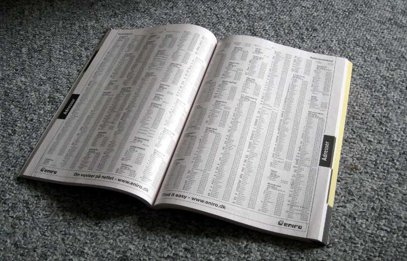
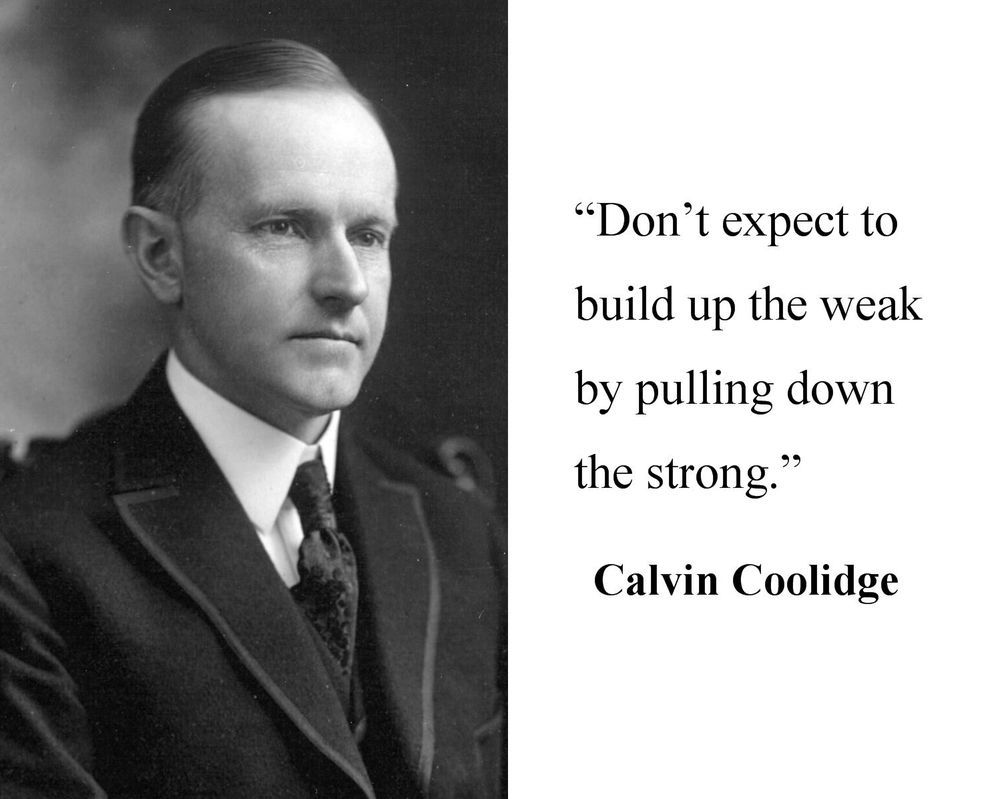

chapter22.1--handout
Background Information
Calvin Coolidge
💧小约翰·卡尔文·柯立芝（John Calvin Coolidge, Jr.，1872年7月4日－1933年1月5日），美国第30任总统，共和党籍。佛蒙特州律师出身（Republican lawyer），在马萨诸塞州政界奋斗多年后成为州长。1920年大选时作为沃伦·哈定的竞选伙伴成功当选第29任美国副总统。1923年，哈定在任内病逝，柯立芝随即递补为总统。1924年大选连任成功。政治上主张小政府，以古典自由派保守主义闻名。
💧柯立芝在任内一扫哈定时期政治丑闻的阴霾，恢复了公众对白宫的信任，故离任时威望极高。他的传记作家这样写道：
"He embodied the spirit and hopes of the middle class, could interpret their longings and express their opinions. That he did represent the genius of the average is the most convincing proof of his strength".
“他体现了中产阶级的精神与希望，他能解读他们的期待和表达他们的意见。他真实代表了大多数人的精神特质这一事实就是证明他力量的最为令人信服的证据。”
Brooklyn

💧布鲁克林（Brooklyn），为美国纽约市的五个行政区之一，也就是纽约州的金斯县（Kings county，意为“国王县”），为纽约州人口最多的县份。布鲁克林位于曼哈顿东南部，东连皇后区。在纽约市五大区中，为人口最多的一区（250万居民）。
💧布鲁克林在19世纪时有许多昵称，其中有“树之城”（City of Trees）、“家之城”（City of Homes）和“教堂之城”（City of Churches），今日则综合称为“家与教会的自治市”（Borough of Homes and Churches）. 在1980年代及90年代，该区以治安不良闻名于世。自朱利安尼担任纽约市长之后，治安大为改善，居住环境也逐渐变好。
phone book
💧Phone book，又称作telephone directory，是一种刊载有当地电话用户信息列表的出版物。我们在国内基本没有见到过这种东西，但是在美国，你如果想找一个人的联系方式，只要去找一本local phone book就可以了。
通过phone book，不仅可以查询到当地的政府、公共事业、商业单位等电话用户的名字、电话号码及地址，通常当地所有的较重要的电话用户都会被收录，但也有部分用户付费来隐去自己的名字。这也是卡叔的故事中Mr. Gaw为什么可以通过Phone book来说明subcontractor的姓名在Brooklyn只有他一个人。

Credit Union
💧Credit Union是合作金融组织，早期信用合作分为农村信用合作社、城市信用合作社。20世纪的加拿大与美国发展了一种主要以消费者为社员的信用合作社，称之为Credit Union，又可分为职业性的与地区性的两类，二次大战后，渐推广到其他亚洲国家。
dentist
💧Dentist，也叫做dental surgeon, 专门搞口腔的各种问题，在美国一般中产家庭会有固定的眼科医生、牙医、心理医生等等，一般牙医又分为dental assistants（牙科助理）, dental hygienists（牙科保健员）, dental technicians（牙科技师）, dental therapists（牙科治疗师）。
值得说一下的是，在美国看牙医是很贵的，更重要的是要提前预约（因为人力成本高，所以大部分职业不能随时stand by），有时候预约要等一个月甚至更久。所以这也算是在美国生活的一个tip啦，凡事要提前做安排，提前make appointment，包括正式的餐厅（除了McDonald's这种快餐之类的）、医院、酒店，各种需要有人服务的地方，have a reservation是一件与人方便自己方便的事情。
Vocabulary
effusive
💧uttered with unrestrained enthusiasm
adj. 流出的；感情横溢的
💧effusive volcanism
喷发的火山活动
an effusive welcome
热情洋溢的欢迎
💧Every visitor noticed that her effusive welcome was not sincere.
所有的客人都看出来她那过分热情的欢迎是不真诚的。
penalty
💧the act of punishing
n. 惩罚, 处罚
💧a penalty kick
罚球
the penalty for speeding
超速罚款
💧There are penalties for inappropriate behaviour.
对不当行为有处罚。
subcontract
💧contract
vt. (将大工程)转包,分包
vt. 制定〔履行〕转包
n. 转包契约
💧We would subcontract the translation work out .
我们会把这翻译工作转包出去。
fabrication
💧fabricate有编造、捏造的意思
这里的fabrication指的是工厂中的装配工作：
enclosed fabrication shop
封闭式装配车间
💧同样fabrication还有构造、建造的意思，类似于building啊什么的：
fabrication cost
建造费用，建造费。
Crush Your Problems
- His method was probably a bit obvious, but the psychology was superb. It is always easier to listen to unpleasant things after we have heard some praise of our good points.
💧...was a bit obvious, but ...was superb.
今天的句子也是很多可以活学活用的哈，一个很简单的转折，用对比体现赞美，可以用来替换你写作中用到的good, better, best这种单一的夸奖：
e.g.The motive of fighting against gender discrimination was a bit obvious, but the courage of hers at that time was superb.
动机很明显，但是勇气很难得。
💧同样，it is always easier to ... after...也是可以随意套用的哈，相当于表示after之后的是一个基础，还是很简单的小词，可以用来替换basic，foundation之类：
阅读是学好英文的基础
Reading is the basic of mastering English.
👉你可以改成：
It is always easier to master English after exposing yourself to a reasonable amount of reading. - Would this have happened / had Mr. Gaw used the hammer-and-dynamite method generally employed on such occasions?
💧还记得我们之前说的虚拟语气省略倒装吗？
小小温习一下，这里的句子还原回来是什么呢？
首先had...这部分的语序：补充回来原本省略的内容，就变成：
If Mr. Gaw had used the...
整个句子，如果不是用疑问的方式，可以整理成：
If Mr. Gaw had used the hammer-and-dynamite method generally employed on such occasions, this would not have happened.
这么看起来是不是熟悉很多啦？
💧Hammer-and-dynamite method，看起来是个神秘的心理学理论，其实直接从字面意思理解就好，hammer锤子，dynamite炸药，所以佛系一点来理解，可以想像成中文的...棍棒底下出孝子？这类的意思吧～其实卡叔就是想说，一般人遇到这种情况，基本就是会原地爆炸，所以当你想说这个意思的时候，不妨想想我们今天的内容哦～
- We have had no problems with her since then.
💧这个句子没难度，但是想顺手给大家说一下，完成时态中间，现在和过去两种的小区别：
首先明确一下，完成时都是用在段时间（duration），所以不管是现在完成时还是过去完成时，都需要有时间段的标志哈。
💧现在完成时：时间起点在过去，duration一直持续到现在。
e.g.I have been with Dida Reading for more than a month.
💧过去完成时：时间起点依然在过去，但是duration在过去的另一个时间点就结束了。
e.g.Messi had won the Golden Ball Award successively before Ronaldo got in and seized the opportunity to triumph in 2013.
所以区别就是：有没有一个明确的时间点，表示结束。
Content Analysis
今天我们就华丽丽的开始第四个part啦，也是How to Win Friends and Influence People的最后一个部分，卡叔给我们分享了新的哲理，就是How to Change People Without Giving Offense，如何在不冒犯别人的情况下改变别人的想法。
💧第一个故事，说的是白宫曾经的主人柯立芝总统，在他想要批评自己某一个secretary的时候，会先夸奖一下对方的美，然后直白的说，别光美了，下面我要说说你的问题，要注意准时。
（“Now, don't get stuck up. I just said that to make you feel good. From now on, I wish you would be a little bit more careful with your Punctuation.”）
这也是卡叔想告诉我们的，想要让别人接受，先夸一下然后再批评，会更让人接受。
（It is always easier to listen to unpleasant things after we have heard some praise of our good points.）

💧第二个故事，卡叔说到了Wark Company，一个工程大楼马上要封顶，结果关键的装饰用的铜制品供货商却掉链子，说无法按时供货，所有人基本是原地爆炸，然而也并没有什么用。
（ What! An entire building held up! Heavy penalties! Distressing losses! All because of one man! Long-distance telephone calls. Arguments! Heated conversations! All in vain. ）
之后公司派出了Mr. Gaw来解决问题，Mr. Gaw见到分包商之后，没有说任何抱怨去diss对方，而是采用了如下套路：
- 做小调查，夸对方名字特别独一份儿
- 认真倾听对方侃侃而谈说自己祖先如何
- 夸奖对方工厂，贬低竞品工厂
- 夸奖对方装配系统，贬低竞品装配系统
- 开心的陪对方吃饭
- 只字未提催发货的事情
这一套连招下来，subcontractor自觉自愿的按期完成了任务，交付了产品。
如果Mr. Gaw像凡人一样跑去diss人家，目标可以实现的吗？
（Would this have happened had Mr. Gaw used the hammer-and-dynamite method generally employed on such occasions?）
💧第三个例子，卡叔说到了Federal Credit Union的一个例子，一个年轻姑娘被雇来做teller trainee（出纳的管培生），她做事情很利索，尤其是对于客户服务方面，做的很好。
（Her contact with our customers was very good. She was accurate and efficient in handling individual transactions.）
但是在balance out 方面并不好（就是把柜台的💰分配平均这样的事情），她的leader想要让她离开，但是Dorothy采用了不同的方式，她先去鼓励了这个管培生，说她对于用户服务方面做的很棒，进而打开了她的心结，使他更容易接受Dorothy的建议，最终问题得到了解决。
（Once she realized I had confidence in her, she easily followed my suggestions and soon mastered this function. We have had no problems with her since then.）
所以，卡叔建议我们，Begin with praise and honest appreciation.
Today's Bonus
今天第二个故事中，Mr. Gaw告诉subcontractor他的名字在Brooklyn只有一个时，subcontractor说自己的祖先是200年前来到NYC定居的荷兰人，今天的彩蛋，我们就来聊聊New York的起源吧～
💧发现纽约
（公元1492—1609年）
1492年，哥伦布发现美洲大陆后，欧洲各国殖民者纷纷涌来建立殖民贸易点，这里逐渐形成自由港，这就是纽约的前身。
1524年，意大利人乔瓦尼·达韦拉扎诺来到河口地区，成为第一个历史记载的造访纽约的欧洲人。
1602 年荷兰派遣亨利·哈德逊（Henry Hudson，纽约的哈得孙河、加拿大的哈德逊湾都是以他来命名的）前往北美洲找寻新乐土，1609年抵达纽约湾并沿着河流北上，隔年哈德逊带着北美洲的土产和毛皮回到荷兰（主要是beaver/河狸的毛皮），许多荷兰商人对这片拥有丰富资源的土地，产生高度的兴趣并定居于此，荷兰人并以“新尼德兰”（New Nederland）命名。
💧曼哈顿诞生
（公元1624—公元1626年）
1624年，荷兰人在加弗纳斯岛建立皮草贸易点，由此欧洲人在新尼德兰开始了正式的永久居留。1625年，阿姆斯特在曼哈顿岛上开始兴建，后称作“新阿姆斯特丹”（Nieuw Amsterdam）.
1626年，荷兰殖民总督彼得·米纽特从当地勒纳佩人手中，以60荷兰盾（2006年约为1000美元）买下曼哈顿岛。建立贸易站，并按荷兰首都阿姆斯特丹的名字，将这个地方命名为“新阿姆斯特丹”，荷兰人在此建立家园落地生根，居民约300人。
💧 纽约诞生
（公元1651—公元1770年）
1651年爆发英荷之战，原住民之间的内战和欧洲殖民者带来的疾病使得勒纳佩人的数量在1660年至1670年间大幅减少。1664年，英国舰队开到这里，荷兰人自知无力与之抗争，新尼德兰总督彼得·斯特伊维桑特投降，将新阿姆斯特丹拱手相让。
英国国王查理二世将这片地方交给他的弟弟管辖，于是，国王的弟弟便将自己的领地从英国的约克郡迁到新阿姆斯特丹，并将地名改为“纽约”，即“新约克”。以与荷兰交换印度尼西亚的伦岛。英国取得“新阿姆斯特丹”的领土，命名为“纽约”，成为英国的殖民地。
（The English conquered the area and renamed it "New York" after the Duke of York.）
17世纪下半叶，纽约人口愈来愈多并成为商业中心，丰富的农产品得以出口，工业制品的进口，带动当地经济的发展。
smart word
今天感触最深的是卡叔对柯立芝的评价：
It is always easier to listen to unpleasant things after we have heard some praise of our good points.